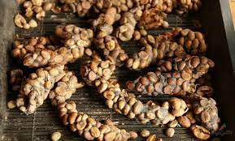
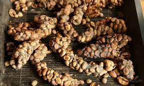

Цікаві факти про каву, які ви могли не знати – читайте!
Кава – найпопулярніший напій на планеті. За даними Міжнародної організації з кави (ICO), останніми роками споживання кави виросло до понад 160 млн мішків (це приблизно 2 мільярди чашок кави) і продовжує набирати обертів. Однак, є чимало цікавих фактів про каву, які досі невідомі багатьом людям, пише ВВС.
Цікаві факти про каву:
-
Найбільше кави на душу населення вживають скандинави
- У скандинавських країнах п’ють більше кави, ніж в будь-якому іншому регіоні. За даними Міжнародної організації кави, найбільше кави на душу населення вживають у Фінляндії. Кожен житель цієї країни випиває в середньому 12 кг кави щорічно.
- Далі йде Норвегія (9,9 кг на душу населення), Ісландія (9 кг), Данія (8,7 кг) та Швеція (8,2 кг).
- Італійці ж споживають 5,9 кг кави на душу населення щорічно.
-
Один з найдорожчих сортів кави добувають з випорожнень
-

Копи лювак – це кава з випорожнень азіатської пальмової циветти. Проходячи через травну систему схожої на кота тваринки, зерна ферментуються, після чого їх збирають і продають за чималі гроші. Півкілограма таких зерен може коштувати до 700 доларів.
-
Конкуренцію цій каві створює так званий “Чорний бивень”, або “Чорна слонова кістка” (Black Ivory). Цю каву збирають вручну із випорожнень таїландських слонів. Її винайшов канадець Блейк Дінкін. Маленькі пакети по 35 грамів продаються в США за 85 доларів. За словами експертів, така кава має “майже схожий на чайний, не гіркий присмак з нотками какао, індійського фініка, тютюну і шкіри”.
-

-
Кава – це вишня
Зерна, з яких роблять каву, – це насправді обсмажене насіння кавової вишні. Якщо таку ягоду розкусити, усередині ви знайдете дві сплющені насінини. Близько 5% усієї кави у світі містить овальне зерно, яке називають “піберрі” (англ. peaberry, “горохова ягода”), оскільки зовні насіння схоже на горошину. Ці зерна особливо цінуються за найбільш тонкий і стійкий аромат. Їх збирають вручну.
-
Ми часто їмо каву, навіть не здогадуючись про це
Кава – не лише напій. Деякі компанії використовують залишки кавової ягоди для виготовлення борошна, з якого роблять тістечка, хліб, шоколад, соуси та інші продукти. А ще мелену каву додають в енергетичні батончики.
-
Існує всього два види кавових зерен
-
Арабіка походить від оригінальних кавових рослин, які відкрили в Ефіопії. З плодів цих кущів виготовляють м’яку та ароматну каву. Вона коштує дорожче і становить приблизно 70% всього світового виробництва.
-
Робуста має більш гіркий присмак і вдвічі більший вміст кофеїну. Ці зерна в основному використовують в сумішах (Бленд) і для розчинної кави. Їх вирощують в Центральній і Західній Африці, деяких регіонах Південно-Східної Азії, зокрема в Індонезії та В’єтнамі, а також в Бразилії.
-
-
Кава корисна для здоров’я
Кава багата на антиоксиданти, які захищають наші клітини від токсинів, хімікатів і запалення. Результати дослідження, опубліковані в журналі Annals of Internal Medicine, показали, що споживання до трьох чашок кави в день знижує ризик смерті від серцевих захворювань. Дослідники спостерігали за більш ніж 500 тисячами людей в 10 європейських країнах протягом 16 років. Вміст кофеїну в каві також допомагає людям збільшити рівень енергії і поліпшити спортивні результати.
-
За легендою, каву відкрили кози в Ефіопії
За легендою, в дев’ятому столітті пастух на ім’я Кальдій побачив, як його кози їли ягоди з дивного куща, і зауважив, що після цього тварини були сповнені енергії і не спали всю ніч. Він розповів про це ченцям, які зрозуміли, що можуть робити з ягід напій, щоб не засинати під час молитви.
-
Каву спочатку називали вином
У XV столітті каву вже вирощували в Ємені. Звідти пішла її перша назва – словом qahwahу називали вино.
-
Перші кав’ярні з’явилися на Близькому Сході
Кавою насолоджувалися не лише вдома, але і в кафе, які почали з’являтися в містах на Близькому Сході. Заклади швидко набули популярності і стали місцями для зустрічей, де люди пліткували, грали в шахи або слухали музику.
-
Всю каву світу вирощують в так званому “Кавовому поясі”
Кава росте в більш ніж 50 країнах, розташованих в зоні, яка називається Кавовим поясом.
-
Цей пояс простягається від сходу Мексики до Папуа Нової Гвінеї.
Ось найбільші виробники кави (% світового виробництва):- Бразилія 36%
- В’єтнам 18%
- Колумбія 9%
- Індонезія 8%
- Гондурас 5%
- Ефіопія 5%